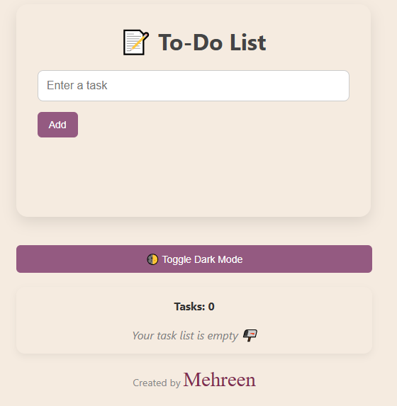
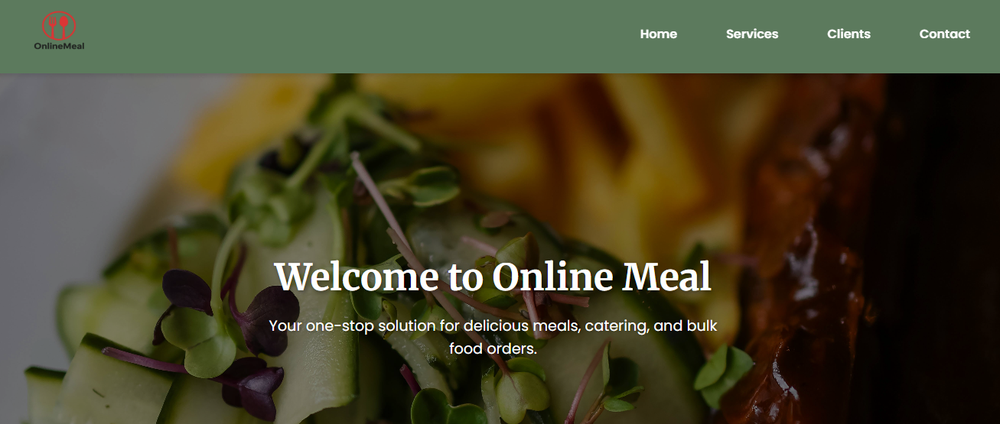

Projects
To-Do List Web App
This app helps users manage their daily tasks. Built using HTML, CSS, and JavaScript. It features a responsive design, dark mode toggle, and localStorage support.
Live Demo GitHub RepoOnline Meal Project
A food-related project hosted on Netlify. Includes meal ideas, recipe cards, and responsive layout. Built with frontend tech stack.
Live DemoDeclutter Queen Blog (The Clutter Edit)
I designed and built this blog using HTML, CSS, and GitHub Pages. The layout is clean, responsive, and optimized for lifestyle content.

Top 10 Amazon Storage Solutions That Actually Work – A blog post I wrote focused on smart home storage products, organization tips, and affordable finds from Amazon.
Declutter PortfolioHow to Style Narrow & Shared Bedrooms – Another original blog post I contributed, offering layout tips, small-space design ideas, and cozy solutions for shared rooms.
The Clutter Edit